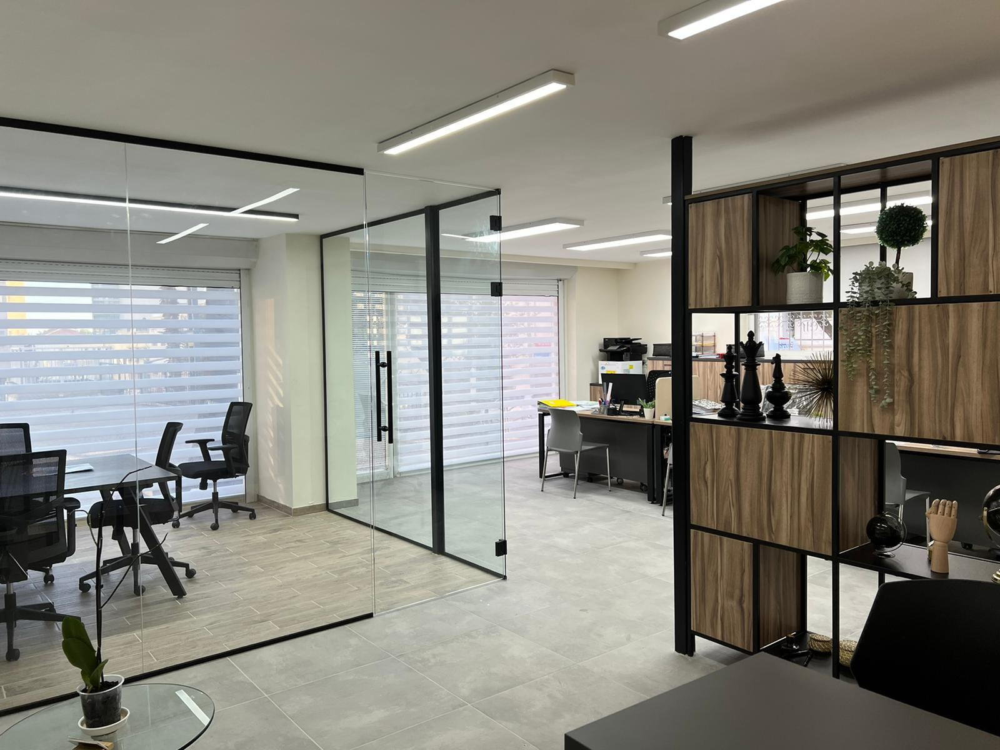

הנהלת חשבונותBookkeeping
לעצמאים, לחברות ולעמותות.For the self-employed, companies and non-profits.
קונספט לדוגמה שנבנה עבור פררו אביטל ושות׳ רואי חשבון · זה אינו האתר הרשמי של העסקA sample concept built for Ferraro, Avital & Co. CPA · This is not the business’s official website
רו״חCPAרמי פררוRami Ferraro
רו״חCPAיעקב אביטלYaakov Avital
המשרד נוסד ב-1990 על ידי רואי החשבון רמי פררו ויעקב אביטל. כיום עובד בו צוות של רואי חשבון, יועצי מס, חשבי שכר ומנהלות חשבונות.The firm was founded in 1990 by CPAs Rami Ferraro and Yaakov Avital. Today its team is made up of CPAs, tax advisers, payroll accountants and bookkeepers.
פררו אביטל ושות׳ רואי חשבון: הנהלת חשבונות, דוחות, תכנון מס וייצוג מול רשויות המס. מאז 1990.Ferraro, Avital & Co. CPA: bookkeeping, financial reports, tax planning and representation before the tax authorities. Since 1990.

1,600+
חוות דעת מומחהExpert opinions
הנתונים מתוך האתר של המשרדFigures from the firm’s own website
אזור ההמתנה והקבלה1/4
מעוסק פטור ועד חברה בע״מ, מעמותה ועד שכיר שמגיש דוח.From an exempt dealer to a limited company, from a non-profit to an employee filing a return.
לעצמאים, לחברות ולעמותות.For the self-employed, companies and non-profits.
תלושי שכר ודיווחים.Payslips and reporting.
והצהרות הון.And capital declarations.
מותאם לעסק שלכם.Fitted to your business.
מס הכנסה, מע״מ וביטוח לאומי.Income tax, VAT and National Insurance.
עוסק פטור, מורשה או חברה בע״מ.Exempt, licensed dealer or a company.
לבתי משפט, בין היתר בתיקי הוצל״פ ומזונות.For the courts, including enforcement and alimony cases.
תכנון פרישה, הלוואות בערבות מדינה, קריפטו ונדל״ן.Retirement plans, state-backed loans, crypto and real estate.
ממליצה בחום! אנשים רציניים ואחראים… מאוד ידידותיים ומוכנים לעזור ולהסביר!
Highly recommended! Serious, responsible people… very friendly and ready to help and explain!
משרד מעולה! יחס אישי ואדיב, מענה מהיר לכל שאלה וכמובן באופן הכי מקצועי.
An excellent office! Personal, courteous treatment, a quick answer to every question and of course in the most professional way.
הגעתי למשרד בעקבות המלצה של חבר וזה היה אחד הצעדים הכי חשובים שעשיתי בעסק שלי… הם בנו לי את התוכנית העסקית שלי.
I came to the office on a friend’s recommendation and it was one of the most important steps I’ve taken in my business… they built my business plan.
משרד רואי חשבון מעולה אמין, יעיל, בעל שירות מצוין וידע מקצועי.
An excellent accounting office: reliable, efficient, with excellent service and professional knowledge.
מקום מצויין לנהל עסק - מקצוענים. מבחינתי מספר 1 בארץ.
A great place to run a business – professionals. For me, number one in the country.
המשרד נוסד ב-1990 על ידי רואי החשבון רמי פררו ויעקב אביטל.The firm was founded in 1990 by CPAs Rami Ferraro and Yaakov Avital.
כן. ייעוץ וליווי אישי בפתיחת עוסק פטור, עוסק מורשה או חברה בע״מ ברשויות המס.Yes. Personal advice and guidance in registering an exempt dealer, a licensed dealer or a limited company with the tax authorities.
כן. חוות דעת מומחה של רואה חשבון, בין היתר בתיקי הוצל״פ ומזונות. לפי אתר המשרד, הוגשו כבר למעלה מ-1,600.Yes. A CPA’s expert opinion, including in enforcement and alimony cases. According to the firm’s website, more than 1,600 have been submitted.
כן. דוחות שנתיים, הצהרות הון והחזרי מס לשכירים, וגם ייעוץ פרישה וקיבוע זכויות.Yes. Annual returns, capital declarations and tax refunds for employees, plus retirement planning and pension rights.
דיווח תקופתי ותכנון מס לסוחרים בשוק ההון ובמטבעות קריפטוגרפיים, ותכנון מס למשקיעי נדל״ן בארץ ובחו״ל.Periodic reporting and tax planning for traders in capital markets and cryptocurrencies, and tax planning for real-estate investors in Israel and abroad.
כן, בירושלים: רחוב יפו 97, מרכז כלל. טלפון 02-6258838.Yes, in Jerusalem: 97 Jaffa St, Clal Center. Phone 02-6258838.